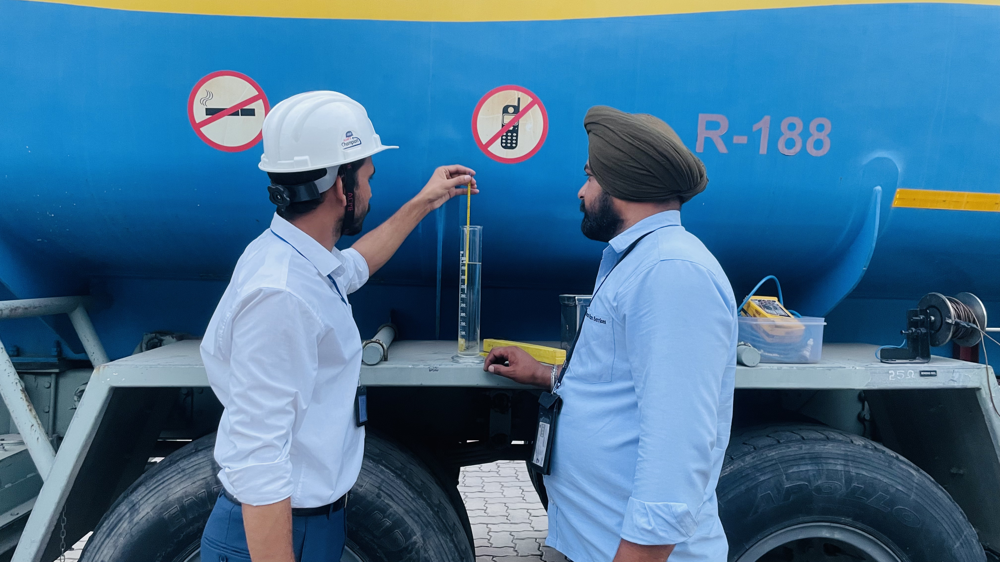

SILVER CORROSION TEST
Frequency: Monthly, IAF locations : F/N.




Purpose
To check extent of corrosiveness of Jet A-1 using Silver strips.
Reference
IP 227 Latest Issue
Responsibility
Quality Control Signatories
🛠️ Tools & Equipment Required
- Glass Test Tubes – 350 ml Capacity.
- Cold Finger Condenser with Glass Cradles.
- Water Bath capable of maintaining temperature of 50 ± 1 °C.
- Thermometer of adequate range with scale graduation of 0.5°C and support to hold it vertically.
- Iso-octane.
- Strip Vice.
- Polishing Materials including Silicon Carbide Cloth of varying fineness, 240 Grade, 150 Mesh Silicon Carbide Grains, and Pharmaceutical Grade Absorbent Cotton Wool.
- Filter Paper.
- Stainless Steel Forceps.
- Silver Strips of Standard Size.
Testing Procedure
- Draw a two liters tank bottom sample from the tank containing the product that is to be tested in a clean aluminum container / stained glass container.
- Surface preparation: Remove all surface blemishes from all six sides of strip by holding it with ashless filter paper and rubbing the strip in a rotary motion on a sheet of abrasive paper moistened with iso-octane and kept on a flat surface. Immerse the strip in iso-octane before final polishing.
- Final Polishing: Remove a strip from the iso-octane. Placing it in the strip vice, polish first the ends and then the sides with 150-mesh silicon carbide grains picked up from a clean glass plate with a pad of cotton moistened with Iso-octane. Rub in the direction of long axis of the strip, carrying the stroke beyond the end of the strip before reversing the direction. Clean all metal dust from the strip with thin cotton pads until a fresh cotton pad remains unsoiled. Immerse the strip in the sample within 1 minute of final polishing.
- Pour 250 ml of sample into a clean glass test tube of 350 ml capacity.
- Suspend a freshly polished strip from the hook on the cold finger condenser by means of a glass cradle.
- Carefully lower the strip and condenser into the sample.
- Place the tube in a water bath and maintain temp. of 50 1 °C for four hours.
- During the test period run water through the condenser at rate of 10 ml / min. to induce thermal stirring.
- At the end of the test period remove the silver strip from the tube and immerse it in iso-octane.
- Withdraw strip immediately with the help of forceps and dry it using filter paper by blotting not wiping.
- Inspect the strip against a freshly polished one by means of classification given in Table 1, Para 8.1 of IP 227 Latest Issue. Use the ASTM Color Standard if required. Care must be taken to prevent exposure of excessive light on the ASTM Color Standard.
- The report should not be worse than "1" i.e. Slight tarnish : Faint brown or white discoloration of strip. ( Refer IP 227 Latest Issue std)
- Record the result in the "Corrosion Test Report" as per the format placed in Format No. Q-4 in QHB.
Important Note
The Silver Strip Corrosion Test is considered satisfactory when the silver strip rating is not worse than “1” as per IP 227 Latest Issue standards. The strip should show only slight tarnish, such as faint brown or white discoloration, after completion of the test at 50 ± 1 °C for four hours.